Brand
Açılış, ürün kimliği ve ana marka anları için en yüksek görsel ağırlık.
NOVA marka sistemi · Pulse Aperture
Bu kütüphane yeni işaret çizmez. Token sözleşmesinde kayıtlı, onaylı Pulse Aperture kaynaklarını marka, düşünme ve önizleme bağlamlarında yeniden kullanır.
Tema kaynakları
Sıra ve dosya yolları design/nova-tokens.json içindeki
accents[].sourceAsset sözleşmesini izler.
Durum sözlüğü
Aynı kaynak, bağlama göre ölçek ve yerleşim değiştirir; geometri kopyalanmaz ve yeniden çizilmez.
Açılış, ürün kimliği ve ana marka anları için en yüksek görsel ağırlık.
Asistanın aktif akıl yürütmesini, kaynak SVG’nin kendi hareket diliyle gösterir.
Tema seçici, ayar satırı ve küçük kartlarda hızlı karşılaştırma görünümü.
Görsel sağlamlık
Okunurluk örnekleri kaynak dosyayı dönüştürmeden, tarayıcı ölçeklemesiyle gösterilir.
Ana siluet ve sıcak çekirdek dört kompakt ölçekte birlikte denetlenir.
Ruby örneği, token setindeki #030304 arka yüzey üzerinde
kırmızı gövdeyi ve sıcak çekirdeği öne çıkarır.
Hareket erişilebilirliği
Pulse Aperture kaynaklarının kendi azaltılmış hareket kuralı korunur; sayfa da aynı tercihte geçiş ve animasyon sürelerini kapatır.
Nefes, yörünge ve çekirdek nabzı dosyanın onaylı ritmini kullanır.
İşletim sistemi tercihi etkin olduğunda kaynak içindeki hareket durur; işaret ve durum bilgisi görünür kalır.
design/brand/pulse-aperture/
altındaki gerçek dosyalara göreli img yollarıyla bağlanır.
Sayfa içinde yeni ya da kopya vektör çizimi bulunmaz.